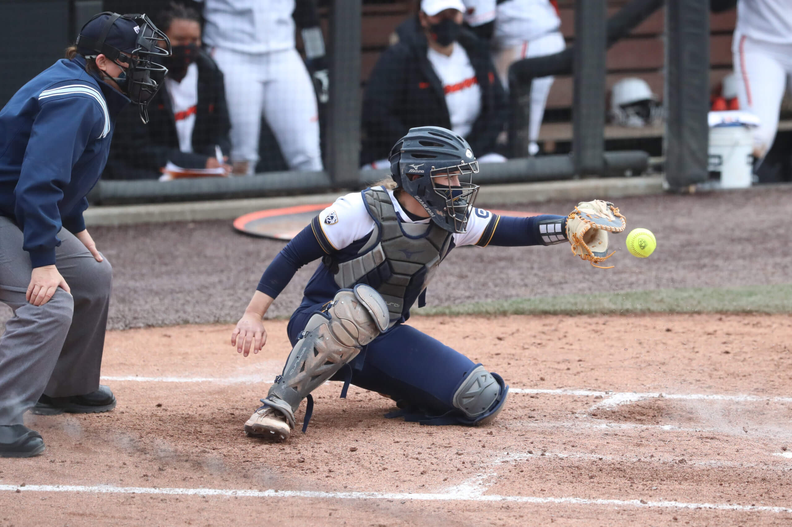

PITCHER The pitcher will attempt to strike out the batter or prevent the batters from getting on the bases. The windmill motion is divided into 5 parts: back swing, arm rotation, final down swing, release, and follow through.

CATCHER The catcher plays an important role in the game of baseball, being the person who uses hand signals to request specific pitches and heads up the team's defense.
First Base the player on a baseball or softball team who fields the area nearest first base, the first of four bases a baserunner must touch in succession to score a run. The first baseman is responsible for the
SHORTSTOP, like second basemen, also turn double plays. Just like their middle infield counterpart, shortstops will receive throws at second from pitchers, third basemen and second basemen on ground balls when a runner is on first. They have to quickly catch the ball,